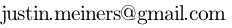

Home
GitHub
Rss

Justin Meiners
Welcome to my personal website!
I love learning and creating new projects.
I hope to share some of them with you.
Feel free to contact me at: 
Background
Here is a little about my background and interests:
- I first learned to program in 2008 using Objective-C and Cocoa/NextStep. My favorite languages are C and Lisp.
- I have a Master’s degree in math. I am familar with many topics at an “advanced undergrad” level, but know must about real analysis and topology.
- I am a Software Engineer at Apple (But I do not write about my employer’s products or business).
- In my career I write technical software in domains like 3D graphics, numerical methods, optimization, combinatorics, signal processing, etc.
- I like 3D modeling and texturing. I learned by tinkering with anim8or and now use Blender. However, I am not a very good artist.
- I enjoy reading philosophy, especially Early Modern and Ancient Greek. Plato is my favorite.
Projects
This is work I have dedicated some significant effort into creating and releasing.
You can also find smaller projects and experiments at my GitHub page.
Notes
I hope to share insights, experiences, and occasionally answer some questions. This writing is informal and sometimes unpolished.
Archives
Sites I preserve for learning and historical purposes.